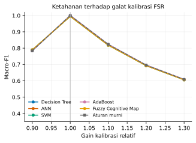

Perbandingan lima algoritma — satu halaman
| Model | Macro-F1 | Recall waspada | Jurnal |
|---|---|---|---|
| Decision Tree | 1,000 ± 0,000 | 1,000 ± 0,000 | Sheikh dkk. 2025, Scientific Reports 15:20962 |
| ANN | 0,995 ± 0,005 | 1,000 ± 0,001 | Darwich dkk. 2023, Baghdad Science Journal 20(6) |
| SVM | 0,995 ± 0,005 | 1,000 ± 0,001 | Agrawal dkk. 2023, IEEE Access 11:23119-23126 |
| AdaBoost | 1,000 ± 0,000 | 1,000 ± 0,000 | Agrawal dkk. 2024, Technologies 12:231 |
| Fuzzy Cognitive Map | 0,995 ± 0,005 | 1,000 ± 0,001 | Ramirez-Bautista dkk. 2022, IEEE Latin America Transactions 20(7) |

- Semua model meniru aturan 45 kPa pada data bersih; urutan juara tidak bermakna klinis.
- Pembeda nyata: ketahanan terhadap gain dan biaya inferensi, bukan akurasi.
- Macro-F1 tertinggi: Decision Tree (1,000 ± 0,000).